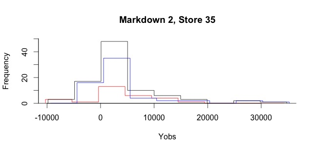
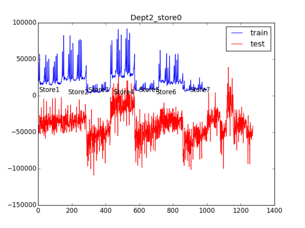
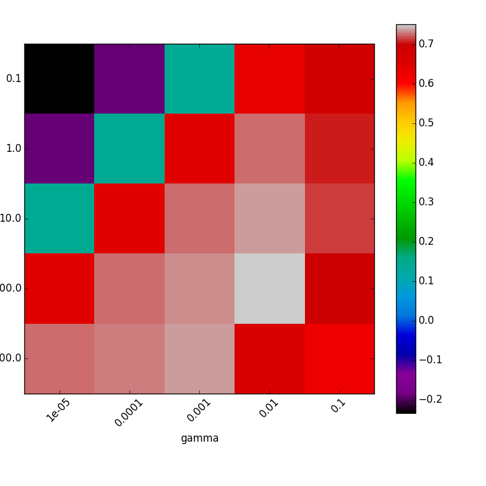

Forecasting using Historical data
The Walmart Weekly Sales Forecasting competition asks competitors to predict the weekly sales for a set of store/department pairs in 2013, given the weekly sales from 2010-2012. (Reference: Kaggle Competition)
- The train.csv and test.csv files contain the weekly sales for each (store, department, date) triple. Note that the test file contains null entries for the weekly sales column, as expected
- The features.csv file contains the temperature, fuel price, markdowns, CPI, unemployment rate, and a holiday indicator for each (store, department, date) triple
- CPI and Unemployment rate and anonymous Markdown data contain a lot of missing data.
- The stores.csv file contains the size and type of each store
We combine all files into two distinct datasets–the training set and test set. Each set contains all features and the weekly sales for each store, department, date . The training data contains weekly sales from February 2010 to October 2012, and the test data contains weekly sales from November 2012 to July 2013.
Missing data imputation
-
CPI and Unemployment rate imputation with ARIMA
Missing data in CPI and Unemployment rate has time-varying chracteristic. We used ARIMA model to forecast CPI and Unemployment rate of each region where Walmart stores are. The package forecast in R is used to build the ARIMA model. (Reference: ARIMA in Wikipedia)


-
Anonymous Markdown imputation with Iterative Regression
We needed to impute missing data in Markdowns. Since Walmart wants to hide where that data came from, we need to figure out the characteristics of our missing data. There are 24040 rows contain at leasst one missing Markdown. We used Iterative regression imputation to impute missing data in Markdowns. According to the note [1], the basic concept of iterative regression imputation is like below:
- Suppose the variables with missingness are a matrix Y with columns Y(1) , . . . , Y(K ) and the fully observed predictors are X.
(Andrew Gelman, Jennifer Hill (2006), "Missing-data imputation", Chapter 25 in Data Analysis Using Regression and Multilevel/Hierarchical Models, Cambridge University Press)
Histograms are plotted to verify the imputed missing value. Blue histogram means original data, while red histogram means imputed data.
Modeling
-
Neural Network
As one of the learning algorithm, we choose Single-layer Neural Network, because we have complex retail data about different stores and departments all over the United States plus some anonymous features.
R is used to handle data, input normalize by 1 to C dummy encoding, and make training set and test set files for Python.
The package PyBrain in Python is used to build the neural network model.(Reference: PyBrain)
As the number of iteration increases, prediction fits the historical data.One of the problems of neural model is that it takes a long time than other model
It is hard to get the result of all of 99 deaprtments cross 45 stores. Theare are about 4500 departments to fit. -
Support vector machines
The other of the learning algorithm, we choose SVM(Support Vector Machines), because data set has a large attirbutes size(213) compaare to the target size(1).
SVM is much faster than Nueral Network, so we could apply SVM to all of departments cross all stores, and get the reuslt. R is also used to handle data, input normalize by 1 to C dummy encoding, and make training set and test set files for Python.
The package scikit-learn in Python is used to build the SVM model.(Reference: scikit-learn)
Grid search method is used to find the best parameters.We built linecharts for all deapartments and stores.
You can try seleting a store and a department to see the result.
Each line chart shows historical data and predicted data based on the historical data.
- ${{tab_ctrl.error_rate[select.depart-1][select.store-1]}}
- C:{{tab_ctrl.parameters.params[select.depart-1].C}}
- Gamma:{{tab_ctrl.parameters.params[select.depart-1].Gamma}}
Weekly sales of Store: {{select.store}}, Department {{select.depart}}
{{product.price | currency}}
Select a store:
Select a department:
Description
The preiction fits historical data for most depratments, if they have strong seasonality.
However, the predicton does not fit vert well for some departments, if they does not have strong seasonality
Detail
Difference:
Parameter:
Select a store:
Select a department:
Description
The preiction fits historical data for most depratments, if they have strong seasonality.
However, the predicton does not fit vert well for some departments, if they does not have strong seasonality
Detail
Difference:
Parameter: